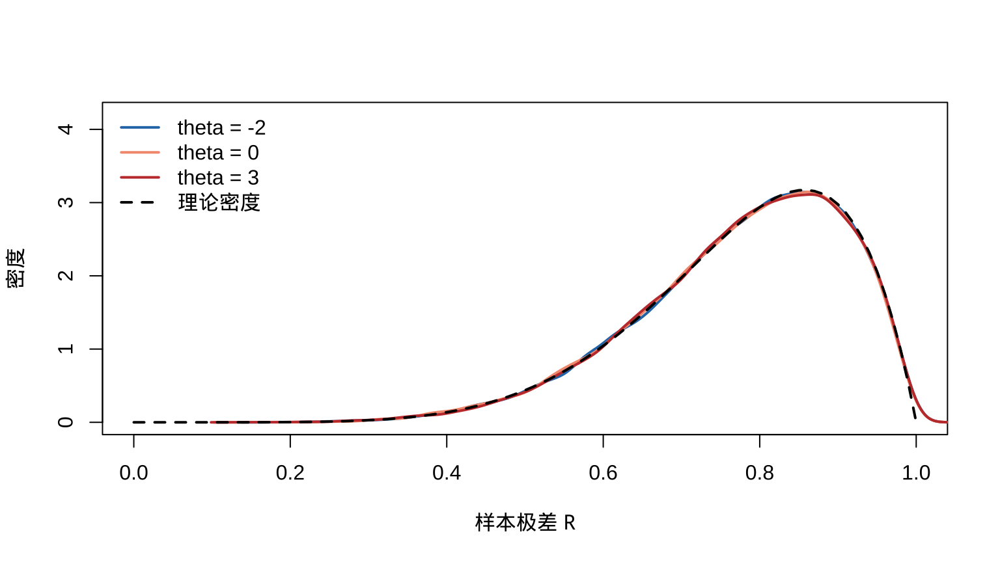

第 6 数据约简原则
本章对应原课件 chap-6.tex、四个 LaTeX 子文件及补充稿 Chapter 6.md。我们研究充分性、似然与等变性三项数据约简原则，并进一步讨论最小充分统计量、辅助统计量、完备性和 Basu 定理。原稿中的支撑集、正态密度与定理条件等必要订正记录在 migration_notes.md。
6.1 为什么需要数据约简
设样本为 \(\mathbf X=(X_1,\ldots,X_n)\)，观测值为 \(\mathbf x=(x_1,\ldots,x_n)\)。当 \(n\) 很大时，直接解释整列数据并不方便；样本均值、样本方差、最大值和最小值等统计量能够概括关键特征。
任何统计量 \(T(\mathbf X)\) 都定义了一种数据约简。令
\[ \mathcal T=\{t:t=T(\mathbf x),\ \mathbf x\in\mathcal X\}, \qquad A_t=\{\mathbf x:T(\mathbf x)=t\}. \]
集合 \(\{A_t:t\in\mathcal T\}\) 构成样本空间 \(\mathcal X\) 的一个划分。只报告 \(T(\mathbf x)=t\)，等价于只报告 \(\mathbf x\in A_t\)：所有落入同一划分块的样本点都被视为具有相同摘要。
本章的三项原则各有侧重：充分性原则力求不丢失有关参数的信息；似然原则刻画观测样本提供的参数信息；等变性原则要求推断能随测量方式或模型结构一致地变换。
6.2 充分性原则与条件分布定义
定义 6.1 定义 6.2.1（充分统计量）
若给定 \(T(\mathbf X)\) 后，样本 \(\mathbf X\) 的条件分布不再依赖参数 \(\theta\)，则称 \(T(\mathbf X)\) 是 \(\theta\) 的充分统计量。
充分性原则要求：若 \(T\) 充分，则关于 \(\theta\) 的推断只应通过 \(T(\mathbf X)\) 依赖样本。特别地，若 \(T(\mathbf x)=T(\mathbf y)\)，观察到 \(\mathbf x\) 或 \(\mathbf y\) 应得到相同的参数推断。
定理 6.2.2（密度比判别） 若 \(p(\mathbf x\mid\theta)\) 是样本联合 pmf 或 pdf，\(q(t\mid\theta)\) 是 \(T\) 的 pmf 或 pdf，并且对每个样本点 \(\mathbf x\)，
\[ \frac{p(\mathbf x\mid\theta)}{q(T(\mathbf x)\mid\theta)} \]
作为 \(\theta\) 的函数为常数，则 \(T(\mathbf X)\) 对 \(\theta\) 充分。
例 6.1 例 6.2.3（二项充分统计量） 若 \(X_i\overset{\mathrm{iid}}\sim\operatorname{Bernoulli}(p)\)，令 \(T=\sum_iX_i\)。证明 \(T\) 对 \(p\) 充分。
查看详细解答
样本联合 pmf 与 \(T\) 的 pmf 分别为
\[ p(\mathbf x\mid p)=p^{\sum x_i}(1-p)^{n-\sum x_i},\qquad q(t\mid p)=\binom ntp^t(1-p)^{n-t}. \]
取 \(t=T(\mathbf x)=\sum_i x_i\)，则
\[ \frac{p(\mathbf x\mid p)}{q(T(\mathbf x)\mid p)} =\frac1{\binom n{T(\mathbf x)}}, \]
不依赖 \(p\)，故成功总数 \(T\) 对 \(p\) 充分。
6.3 因子分解定理与正态样本
定理 6.1 定理 6.2.6（Neyman–Fisher 因子分解定理） 统计量 \(T(\mathbf X)\) 对 \(\theta\) 充分，当且仅当存在函数 \(g\) 和 \(h\)，使所有样本点和参数点满足
\[ f(\mathbf x\mid\theta)=g(T(\mathbf x)\mid\theta)h(\mathbf x), \]
其中 \(h\) 不依赖 \(\theta\)。
展开证明
先证离散情形。若 \(T\) 充分，取
\[ g(t\mid\theta)=P_\theta\{T(\mathbf X)=t\},\qquad h(\mathbf x)=P\{\mathbf X=\mathbf x\mid T(\mathbf X)=T(\mathbf x)\}. \]
充分性保证 \(h\) 不依赖 \(\theta\)，且乘法公式给出
\[ P_\theta(\mathbf X=\mathbf x) =P_\theta\{T(\mathbf X)=T(\mathbf x)\} P\{\mathbf X=\mathbf x\mid T(\mathbf X)=T(\mathbf x)\} \]
即所需分解。反之，若 \(f(\mathbf x\mid\theta)=g(T(\mathbf x)\mid\theta)h(\mathbf x)\)，记 \(A_t=\{\mathbf y:T(\mathbf y)=t\}\)，则对 \(\mathbf x\in A_t\)，
\[ P_\theta(\mathbf X=\mathbf x\mid T=t) =\frac{g(t\mid\theta)h(\mathbf x)} {\sum_{\mathbf y\in A_t}g(t\mid\theta)h(\mathbf y)} =\frac{h(\mathbf x)}{\sum_{\mathbf y\in A_t}h(\mathbf y)}, \]
右端不含 \(\theta\)，故 \(T\) 充分。连续情形将概率质量与求和替换为相应密度与积分，论证相同。
例 6.2 例 6.2.7（已知方差的正态样本） 设 \(X_i\overset{\mathrm{iid}}\sim N(\mu,\sigma^2)\)，\(\sigma^2\) 已知。证明 \(\bar X\) 对 \(\mu\) 充分。
查看详细解答
利用恒等式
\[ \sum_{i=1}^n(x_i-\mu)^2 =\sum_{i=1}^n(x_i-\bar x)^2+n(\bar x-\mu)^2 \]
把联合密度分解为
\[ \begin{aligned} f(\mathbf x\mid\mu) &=(2\pi\sigma^2)^{-n/2} \exp\left[-\frac1{2\sigma^2}\sum_i(x_i-\bar x)^2\right]\\ &\quad\times\exp\left[-\frac n{2\sigma^2}(\bar x-\mu)^2\right]. \end{aligned} \]
故 \(\bar X\) 对 \(\mu\) 充分。也可利用 \(\bar X\sim N(\mu,\sigma^2/n)\) 检查条件密度与 \(\mu\) 无关。
6.4 支撑集依赖参数的充分统计量
例 6.3 若 \(X_i\) 来自离散均匀分布 \(\{1,\ldots,\theta\}\)，则
\[ f(\mathbf x\mid\theta) =\theta^{-n}I\{x_i\in\mathbb N,\ x_i\ge1\ \forall i\} I\{X_{(n)}\le\theta\}. \]
因子分解定理表明最大值 \(X_{(n)}\) 对 \(\theta\) 充分。
例 6.4 若 \(X_i\overset{\mathrm{iid}}\sim N(\mu,\sigma^2)\)，两个参数都未知，则
\[ f(\mathbf x\mid\mu,\sigma^2) =(2\pi\sigma^2)^{-n/2} \exp\left[-\frac{(n-1)s^2+n(\bar x-\mu)^2}{2\sigma^2}\right]. \]
故 \((\bar X,S^2)\) 对 \((\mu,\sigma^2)\) 联合充分。等价地，也可取 \((\sum_iX_i,\sum_iX_i^2)\)。
6.5 最小充分统计量
定义 6.2 充分统计量 \(T\) 称为最小充分统计量，若对任意其他充分统计量 \(T'\)，都存在函数 \(g\) 使 \(T=g(T')\)。它实现了充分统计量之间最大程度的数据约简。
定理 6.2 定理 6.2.13（最小充分判别准则） 若对任意样本点 \(\mathbf x,\mathbf y\)，比值
\[ \frac{f(\mathbf x\mid\theta)}{f(\mathbf y\mid\theta)} \]
与 \(\theta\) 无关，当且仅当 \(T(\mathbf x)=T(\mathbf y)\)，则 \(T\) 是最小充分统计量。
展开证明
由“比值与 \(\theta\) 无关”的充要条件，可把样本空间划分为等价类：\(\mathbf x\sim\mathbf y\) 当且仅当该密度比不依赖 \(\theta\)。统计量 \(T\) 恰好给这些等价类编号。
先取任意充分统计量 \(U\)。由因子分解定理，若 \(U(\mathbf x)=U(\mathbf y)\)，则
\[ \frac{f(\mathbf x\mid\theta)}{f(\mathbf y\mid\theta)} =\frac{h(\mathbf x)}{h(\mathbf y)}, \]
与 \(\theta\) 无关，因而 \(T(\mathbf x)=T(\mathbf y)\)。所以 \(T\) 在 \(U\) 的每一个水平集上恒定，存在函数 \(g\) 使 \(T=g(U)\)；这正是最小充分性。
另一方面，按假设，\(T(\mathbf x)=T(\mathbf y)\) 时密度比不依赖 \(\theta\)。在每个水平集选择代表点 \(\mathbf x_t\)，令 \(g(t\mid\theta)=f(\mathbf x_t\mid\theta)\)，并令 \(h(\mathbf x)=f(\mathbf x\mid\theta)/f(\mathbf x_{T(\mathbf x)}\mid\theta)\)；该比值不依赖 \(\theta\)。于是得到因子分解，故 \(T\) 本身充分。两部分合起来，\(T\) 最小充分。
正态双参数样本的密度比可写为
\[ \exp\left\{\frac{-n(\bar x^2-\bar y^2)+2n\mu(\bar x-\bar y) -(n-1)(s_{\mathbf x}^2-s_{\mathbf y}^2)}{2\sigma^2}\right\}. \]
它与 \((\mu,\sigma^2)\) 无关当且仅当 \(\bar x=\bar y\) 且 \(s_{\mathbf x}^2=s_{\mathbf y}^2\)，所以 \((\bar X,S^2)\) 最小充分。
若 \(X_i\sim U(\theta,\theta+1)\)，则
\[ f(\mathbf x\mid\theta)=I\{x_{(n)}-1<\theta<x_{(1)}\}. \]
两个样本点给出相同的参数可行区间，当且仅当其最小值和最大值相同。因此 \((X_{(1)},X_{(n)})\) 是最小充分统计量。
6.6 辅助统计量与位置尺度族
定义 6.3 若统计量的分布不依赖所关心的参数，则称它为该参数的辅助统计量。
例 6.5 若 \(X_i\sim U(\theta,\theta+1)\)，令极差 \(R=X_{(n)}-X_{(1)}\)、中点 \(M=(X_{(1)}+X_{(n)})/2\)。由顺序统计量联合密度和变换可得
\[ f_{R,M}(r,m)=n(n-1)r^{n-2}, \]
其中 \(0<r<1\) 且 \(\theta+r/2<m<\theta+1-r/2\)。积分消去 \(m\) 后，
\[ f_R(r)=n(n-1)r^{n-2}(1-r),\qquad0<r<1, \]
不含 \(\theta\)，所以 \(R\) 是辅助统计量。
对位置族 \(F(x-\theta)\)，极差同样不受平移参数影响。对尺度族 \(F(x/\sigma)\)，比值 \((X_1/X_n,\ldots,X_{n-1}/X_n)\) 的联合分布不依赖 \(\sigma\)；例如 \((\sum_iX_i)/X_n\) 是辅助统计量。
辅助统计量本身不携带参数信息，却可能帮助评估估计精度。例如正态模型中，在只关心 \(\mu\) 时，\(\bar X\) 对 \(\mu\) 最小充分，而 \(S^2\) 对 \(\mu\) 辅助，并用于估计 \(\bar X\) 的方差。
set.seed(6201)
n <- 8
theta_values <- c(-2, 0, 3)
cols <- c("#2878B5", "#F39B7F", "#C43C39")
plot(NA, xlim = c(0, 1), ylim = c(0, 4.2), xlab = "样本极差 R", ylab = "密度")
for (j in seq_along(theta_values)) {
x <- matrix(runif(30000 * n, theta_values[j], theta_values[j] + 1), ncol = n)
lines(density(apply(x, 1, function(z) max(z) - min(z))), col = cols[j], lwd = 2)
}
curve(n * (n - 1) * x^(n - 2) * (1 - x), 0, 1, add = TRUE, lwd = 2, lty = 2)
legend("topleft", c(paste0("theta = ", theta_values), "理论密度"),
col = c(cols, "black"), lwd = 2, lty = c(1, 1, 1, 2), bty = "n")
图 6.1: 不同位置参数下，均匀样本极差具有相同分布
6.7 完备统计量
定义 6.4 统计量 \(T\) 的分布族称为完备的，若对任何可积函数 \(g\)，
\[E_\theta\{g(T)\}=0\quad\text{对所有 }\theta\]
都蕴含 \(P_\theta\{g(T)=0\}=1\) 对所有 \(\theta\) 成立。此时称 \(T\) 为完备统计量。
例 6.6 若 \(T\sim\operatorname{Bin}(n,p)\)，且 \(E_p g(T)=0\) 对所有 \(0<p<1\)，则
\[ 0=(1-p)^n\sum_{t=0}^ng(t)\binom nt\left(\frac p{1-p}\right)^t. \]
令 \(r=p/(1-p)\)。右侧多项式对所有 \(r>0\) 恒为 0，所以每个系数 \(g(t)\binom nt\) 均为 0。故二项分布族完备。
若 \(X_i\sim U(0,\theta)\)，则 \(T=X_{(n)}\) 的密度为
\[f_T(t\mid\theta)=nt^{n-1}\theta^{-n},\qquad0<t<\theta.\]
若 \(E_\theta g(T)=0\) 对所有 \(\theta\)，则 \(\int_0^\theta ng(t)t^{n-1}\,dt=0\)。对 \(\theta\) 求导得到 \(ng(\theta)\theta^{n-1}=0\)，故 \(T\) 完备。结合因子分解定理，\(X_{(n)}\) 是完备充分统计量。
6.8 Basu 定理及独立性应用
定理 6.3 定理 6.2.24（Basu 定理） 完备充分统计量与每一个辅助统计量相互独立。
展开证明
设 \(T\) 完备充分，\(V\) 辅助。对任意可测集合 \(B\)，令
\[g_B(T)=P_\theta(V\in B\mid T)-P_\theta(V\in B).\]
因为 \(T\) 充分，第一项作为 \(T\) 的函数不依赖 \(\theta\)；因为 \(V\) 辅助，第二项也不依赖 \(\theta\)。由全期望公式，
\[E_\theta\{g_B(T)\}=P_\theta(V\in B)-P_\theta(V\in B)=0\]
对所有 \(\theta\) 成立。完备性于是推出 \(g_B(T)=0\) 几乎处处，即
\[P_\theta(V\in B\mid T)=P_\theta(V\in B).\]
对所有可测 \(B\) 均成立，故 \(T\) 与 \(V\) 独立。
若 \(X_i\) iid 服从均值为 \(\theta\) 的指数分布，则 \(T=\sum_iX_i\) 是完备充分统计量，而 \(G=X_n/\sum_iX_i\) 的分布不依赖尺度参数，故 \(G\) 与 \(T\) 独立。
若 \(X_i\sim N(\mu,\sigma^2)\)，则 \((\bar X,S^2)\) 的经典独立性也可从完备充分结构与辅助性理解；在只固定一个参数作推断时需明确参数空间和所用统计量。
若最小充分统计量存在，则任何完备充分统计量也是最小充分统计量。仅有完备性而没有充分性，不足以推出最小充分性。
6.9 似然原则
定义 6.5 观察到 \(\mathbf X=\mathbf x\) 后，
\[L(\theta\mid\mathbf x)=f(\mathbf x\mid\theta)\]
作为 \(\theta\) 的函数称为似然函数。
似然原则认为：样本关于 \(\theta\) 的全部证据由似然函数给出。若两个实验结果的似然函数成正比，即
\[L_1(\theta\mid\mathbf x_1)=C\,L_2(\theta\mid\mathbf x_2),\qquad C>0\]
且 \(C\) 不依赖 \(\theta\)，则它们应产生相同的参数证据与推断。